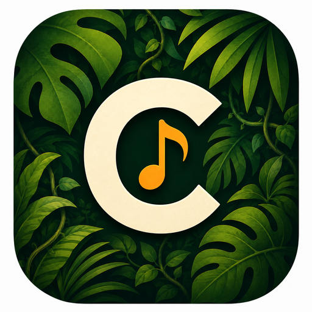
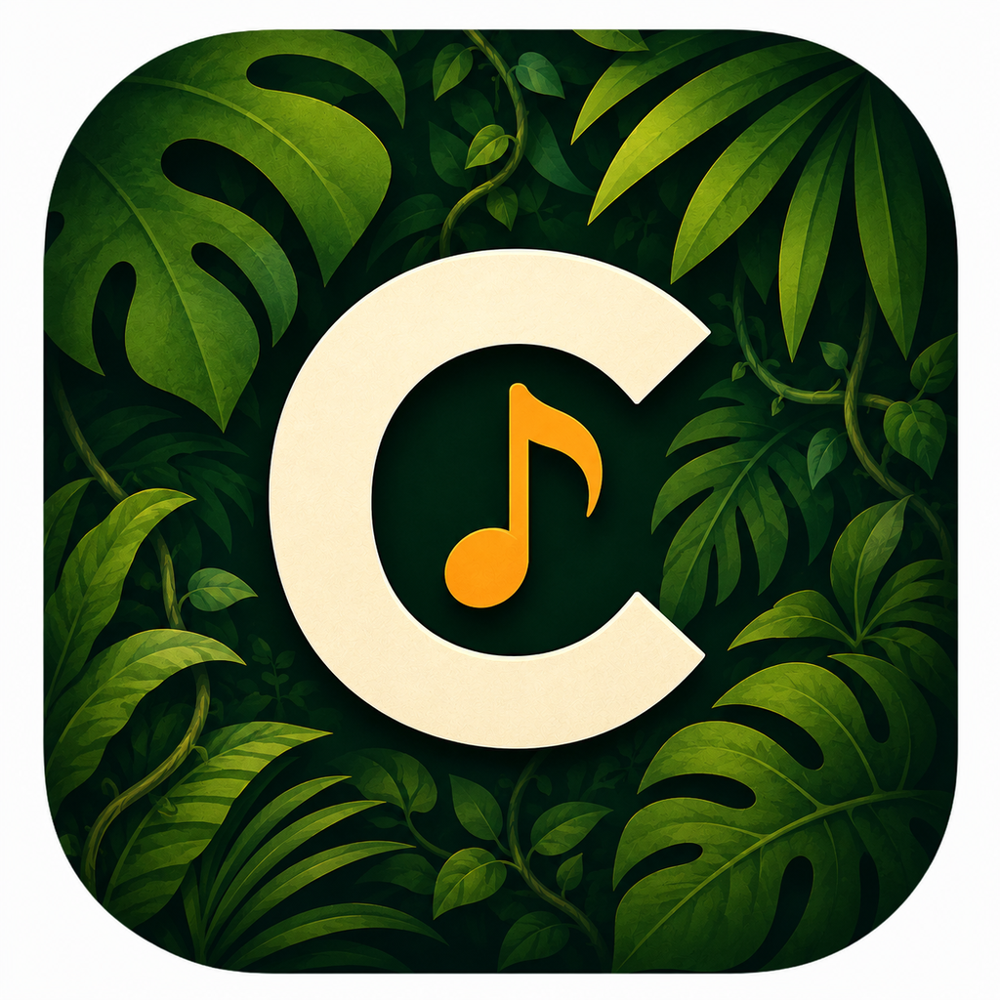

Songs erstellen & lesen
Lege Lieder mit Texten, Akkorden, Tags, Notizen und Metadaten an. Die Vorschau bereitet Akkorde und Struktur lesbar auf.

ChordJungleAktuelle Beta
ChordJungle ist deine digitale Musikmappe für Probe, Bühne und unterwegs: Songs erstellen, Text-, ChordPro- und OnSong-Dateien importieren, Setlisten vorbereiten, im Stage Mode klar lesen und Repertoire bewusst sichern, übertragen oder kuratieren.
Offline-first. Ohne Konto. Ohne Abo-Logik. Für echte Songbook-Workflows.

Warum ChordJungle?
Zwischen PDF-Ordnern, Akkordzetteln, Notizen und spontanen Setlisten verliert man schnell den Überblick. ChordJungle bringt Songs, Akkorde, Texte, Setlisten, Import, Metronom, Backup, Pedalsteuerung, Community-Repertoire und Bühnenansicht an einen Ort – lokal auf deinem Gerät und auch ohne Internet zuverlässig nutzbar.
Lege Lieder mit Texten, Akkorden, Tags, Notizen und Metadaten an. Die Vorschau bereitet Akkorde und Struktur lesbar auf.
Ordne Songs für Probe, Gottesdienst, Unterricht oder Auftritt. Die aktive Setliste bringt dich zurück in deinen laufenden Kontext.
Nutze eine gut lesbare Bühnenansicht mit Setlist-Navigation, Vollbild-Fokus, Keep-Awake und optionalem visuellen Metronom.
Ändere Tonarten nicht-destruktiv und passe die Textgröße pro Song an – ohne den Originalrohtext umzuschreiben.
Importiere lokale Text-, OnSong- und ChordPro-Dateien bewusst über die Dateiauswahl und prüfe Titel und Rohtext vor dem Speichern.
Sichere deine lokale Bibliothek als vollständige Momentaufnahme und stelle sie bei Bedarf bewusst wieder her.
Übertrage ausgewählte Songs oder Setlisten im vertrauenswürdigen lokalen Netzwerk – mit Suche, manueller IP oder QR-Ziel.
Synchronisiere als Beta-Funktion deine eigenen Geräte über WebDAV/Nextcloud. Gedacht für eine Person, nicht als Team-Bibliothek.
Nutze Tempo, Taktart, visuellen Puls, Ton, Lautstärke und Vibration passend zum Song- oder Stage-Kontext.
Steuere Live-Workflows mit Bluetooth-Pedalen oder Hardwaretasten: nächster Song, vorheriger Song und Transposition.
Verbinde kuratierte Repertoires über Nextcloud/WebDAV mit Repertoire, Vorschlägen und Archiv – getrennt von privatem Sync.
Sende Beta-Feedback mit Geräteinfos, App-Version, Reproduktionsschritten und optionalem Screenshot direkt aus dem Diagnosebereich.
Plattformen
ChordJungle wird als Flutter-App entwickelt. Die private Beta deckt Android, iPhone, iPad sowie ausgewählte Desktop-Builds ab; die Oberfläche ist für Deutsch, Englisch, Französisch und Spanisch vorbereitet.
Beta-Stand
Die App bleibt keine vollständige Kopie großer Songbook-Suiten, sondern konzentriert sich auf robuste Alltagsabläufe: offline nutzbar, klar lesbar und mit Funktionen, die vor Probe und Bühne wirklich helfen.
“No more song chaos. Just your music, ready when you are.”
FAQ
Für Musiker, Bands, Sänger, Gruppen, Musikleiter und alle, die Songs mit Akkorden, Texten und Setlisten organisieren möchten.
Nein. Akkorde spielen eine wichtige Rolle, aber die App ist bewusst nicht auf ein einzelnes Instrument festgelegt.
Ja. ChordJungle ist offline-first konzipiert. Songs, Setlisten und Stage Mode sollen ohne Login und ohne Internet funktionieren.
Der Fokus liegt auf lokalen Textdateien wie TXT, OnSong und ChordPro. SongSelect kann manuell über den Browser genutzt werden, indem du dort eine verfügbare Datei herunterlädst und diese lokale Datei importierst.
Nein. Die optionale Nextcloud/WebDAV-Synchronisation ist aktuell für eine Person mit mehreren eigenen Geräten gedacht, nicht als Echtzeit-Team-Bibliothek.
Ein getrenntes, kuratiertes Repertoire für Gruppen wie Gemeinden, Bands oder Chöre. Lokale Songs bleiben privat; Veröffentlichung, Vorschläge und Archiv sind bewusste Aktionen und abhängig von den Nextcloud/WebDAV-Rechten.
ChordJungle ist weiterhin eine private Beta. Über die Kontakt-Schaltflächen kannst du Interesse anmelden oder Feedback zum aktuellen Stand geben.
Stay tuned